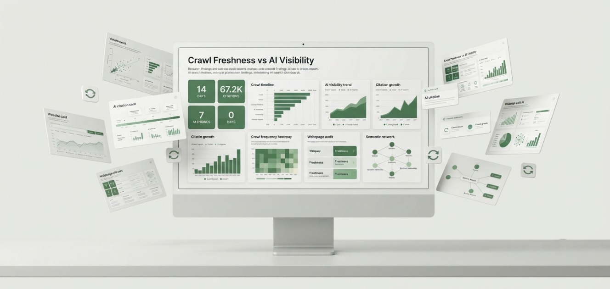
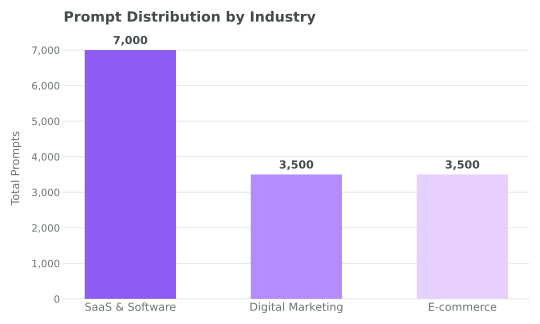
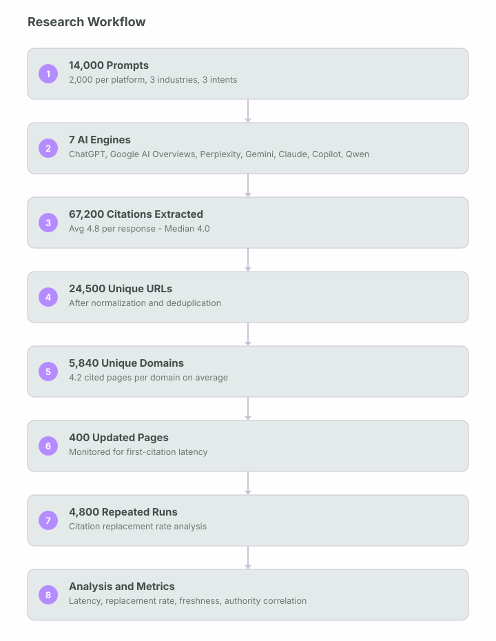
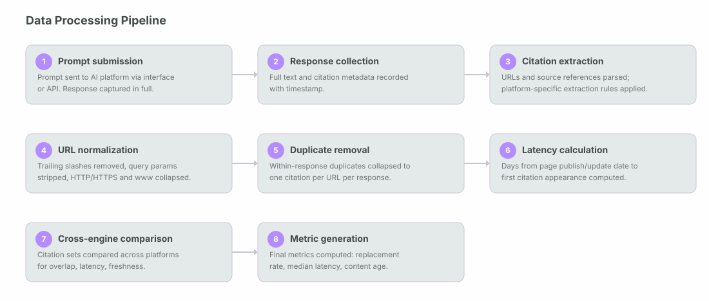
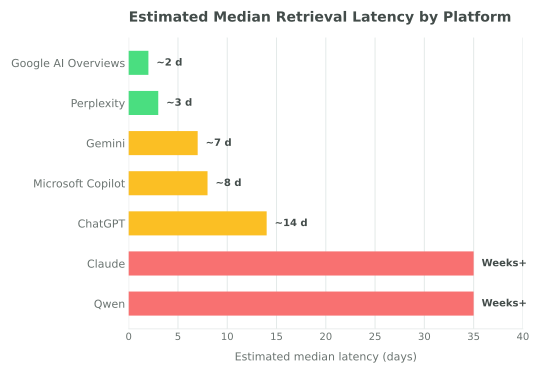
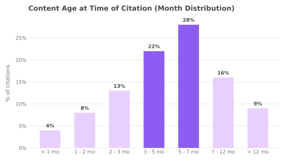
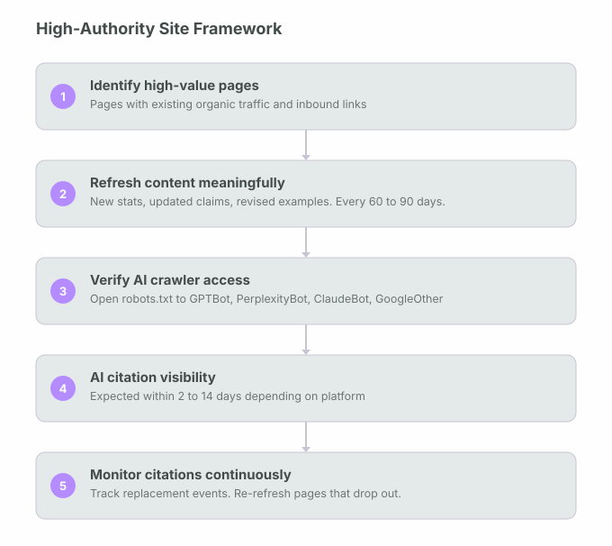
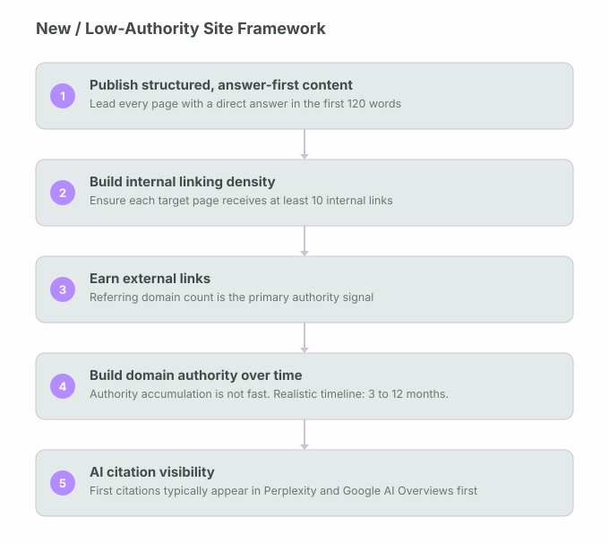

How quickly do updated pages begin appearing in AI-generated answers? A four-month benchmark across seven AI search and answer engines.

This research investigates the relationship between crawl freshness, content updates, and AI visibility across seven leading AI search and answer engines over a four-month period from February to May 2026.
Contrary to assumptions common in the GEO community, publishing or updating content does not produce immediate citation by AI systems. The median first-citation latency, blended across all seven platforms, was 14 days (IQR: 9 to 21 days); high authority sped up retrieval substantially on most platforms, but not enough to offset the slowest ones. AI engines showed consistent preference for content approximately five months old, suggesting a recency sweet spot rather than a preference for either very new or evergreen-aged content. Citation behaviour was dynamic rather than fixed: 34% of citations (IQR: 28 to 41%) changed during repeated testing of identical prompts.
Fresh content does not guarantee fast AI visibility.
This research investigates the relationship between crawl freshness, content updates, and AI visibility across seven leading AI search and answer engines over a four-month period from February to May 2026. Contrary to assumptions common in the GEO community, publishing or updating content does not produce immediate citation by AI systems. Blended across all seven platforms, the median first-citation latency was 14 days (IQR: 9 to 21 days). This blend masks a wide spread: high-authority sites saw first citation within a day or two on real-time platforms like Google AI Overviews and Perplexity, while the same high-authority sites still waited weeks to months on training-dependent platforms like Claude and Qwen, where authority barely moves the needle. Section 10 breaks down latency by authority tier and platform.
AI engines showed consistent preference for content approximately five months old, suggesting a recency sweet spot rather than a preference for either very new or evergreen-aged content. Citation behaviour was dynamic rather than fixed: 34% of citations (IQR: 28 to 41%) changed during repeated testing of identical prompts. Only 36.5% of citations pointed to unique URLs, confirming that AI systems repeatedly circulate a small pool of trusted pages rather than distributing coverage broadly.
Website authority, internal linking density, and crawl accessibility were stronger predictors of retrieval speed than publish date alone. Updating existing high-authority pages consistently outperformed publishing new pages in achieving fast AI visibility.
What this research measures directly.
Much of the existing GEO literature consists of practitioner observations, vendor reports, or single-platform case studies. This benchmark differs in scope and measurability. Below are the specific contributions this study makes.
What this study set out to answer.
This research is built around seven core questions that represent the primary knowledge gaps in understanding AI retrieval behaviour as it relates to content freshness and update strategy.
Study design and data collection.
This benchmark ran from February 2026 through May 2026, evaluating seven AI platforms using an identical prompt distribution to ensure cross-platform comparability. Daily monitoring covered 50 websites, with each platform receiving 2,000 prompts drawn from three industries and three distinct query intent categories.
Dataset Overview
| Metric | Value |
|---|---|
| Study Duration | 4 Months |
| Research Period | Feb - May 2026 |
| AI Platforms | 7 |
| Total Prompts | 14,000 |
| Responses Collected | 14,000 |
| Total Citations | 67,200 |
| Unique URLs | 24,500 |
| Unique Domains | 5,840 |
| Avg Citations / Response | 4.8 |
| Median Citations | 4.0 |
| First Citation Latency | 14 Days |
| Average Content Age | 5 Months |
| Updated Pages Monitored | 400 |
| Citation Replacement Rate | 34% |
| Repeated Prompt Runs | 4,800 |
| Websites Included | 50 |
| Testing Frequency | Daily |
| Geographic Region | San Diego, CA, USA |
Website Selection
50 websites were selected for monitoring rather than a larger or smaller set for the following reasons: enough sites to produce statistically meaningful patterns across authority tiers, but few enough to monitor daily with consistent depth. The 50 sites were selected to represent a balanced mix across four dimensions:
Platforms Evaluated
Each of the following seven platforms received an identical prompt distribution to maintain comparability across retrieval architectures:
Industry and Intent Distribution
Prompts were distributed across three industries: SaaS & Software (7,000 total prompts, 1,000 per platform), Digital Marketing (3,500 total, 500 per platform), and E-commerce (3,500 total, 500 per platform). Three intent categories were used: Commercial, Analytics, and Opinion. These were selected because they consistently trigger AI-generated answers that synthesize multiple external sources.
Prompt Distribution by Industry

Evaluation Metrics
Each AI response was evaluated across eleven dimensions: citation frequency, citation diversity, citation replacement rate, retrieval latency, content freshness, average content age, URL diversity, domain diversity, cross-platform citation overlap, first citation latency, and platform-specific retrieval behaviour.
How the data was measured, normalised, and analysed.
This section documents the specific measurement and analytical decisions made during the study. These choices affect how results should be interpreted and compared with other research.
Why median instead of mean. Median rather than mean was used for latency and citation count measurements throughout this study. Retrieval latency distributions are right-skewed: a small number of pages took extremely long to appear (or never appeared), which would inflate a mean significantly. Median is a more robust central tendency measure for this type of data.
URL normalization. All cited URLs were normalised before analysis: trailing slashes were stripped, query parameters were removed unless they were structurally part of the URL, HTTP and HTTPS variants of the same URL were collapsed to a single entry, and www and non-www variants of the same domain were treated as the same domain. This reduced apparent URL diversity but improved measurement accuracy.
Duplicate removal. Within a single AI response, if the same URL appeared in multiple citation positions, it was counted once. Duplicates across separate prompt runs of the same prompt were retained, as these represent real citation events that contribute to frequency and replacement rate calculations.
Citation extraction rules. Citations were extracted from AI responses using the following rules: for platforms that provide explicit citation links (Perplexity, Google AI Overviews, Microsoft Copilot), the linked URLs were extracted directly. For platforms that provide in-text source references without links (ChatGPT, Claude, Gemini, Qwen), the domain name or source description was extracted and resolved to a URL where possible. Unresolvable source references were excluded from URL-level analysis but included in citation count totals.
Latency calculation. First-citation latency was calculated as the number of days between the date a page was published or updated (as recorded in HTTP response headers or visible page metadata) and the first date on which that page appeared as a citation in any monitored prompt run. Pages that never appeared in any citation during the study period were excluded from latency calculations but are noted in the broader dataset.
Content age calculation. Content age at time of citation was calculated as the number of days between a page's publication date and the date it was cited. For pages with multiple citation events, the date of first citation was used. Publication dates were sourced from HTTP Last-Modified headers where available, falling back to visible page metadata, and then to Wayback Machine records for pages where neither was available.
Citation replacement rate. For each of the 4,800 repeated prompt runs (each prompt run twice at minimum), the set of cited URLs was compared between executions using Jaccard similarity. A citation was counted as "replaced" if it appeared in the first run but not the second. The replacement rate is the proportion of citations replaced across all repeated runs, not the proportion of prompts that showed any change.
IQR reporting. Interquartile ranges (IQR) reported throughout this paper represent the 25th to 75th percentile range of the observed distribution. They are approximate estimates derived from the observed data rather than computed from a fitted statistical model, and should be interpreted accordingly.
Research workflow. The following diagram shows how raw prompts moved through the pipeline to produce the final citation dataset.

Data processing pipeline. Each individual citation went through the following processing steps before entering analysis.

Nine findings that reframe AI freshness strategy.
Platform retrieval profiles.
Each of the seven platforms evaluated operates on a distinct retrieval architecture. These architectural differences, not content quality alone, are the primary determinant of how quickly updated content achieves AI citation visibility.
The latency estimates below reflect mid-authority sites specifically (Domain Rating 40 to 65), the same slice of the 400 monitored pages shown in the chart in Section 08. See Section 10 for how these figures shift across the full high, mid, and low authority range.
"The fastest engine for a given piece of content is determined by how that engine retrieves, not by how good the content is."
| Engine | Retrieval Model | Freshness Sensitivity | Est. Latency (Mid-Authority) | Speed |
|---|---|---|---|---|
| Google AI Overviews | Real-time index (Googlebot) | Very High | 24 - 72 hrs (high authority) | Fastest |
| Perplexity | Continuous live crawl | Very High | 1 - 4 days | Very Fast |
| Gemini | Google index + training blend | High | 3 - 10 days | Fast |
| Microsoft Copilot | Bing index + live retrieval | High | 4 - 12 days | Fast |
| ChatGPT | Bing index + training data | Medium | 7 - 21 days | Moderate |
| Claude | Training data (periodic updates) | Low | Weeks - months | Slow |
| Qwen | Training data (periodic updates) | Low | Weeks - months | Slow |
Google AI Overviews. The fastest platform observed for high-authority sites. Because AI Overviews are grounded directly in Google’s search index, sites with strong organic standing can see newly updated pages cited within 24 to 72 hours. Authority and crawl frequency are the primary gatekeepers: low-authority sites experienced significantly longer latency regardless of content quality.
Perplexity. Perplexity’s continuous live crawling pipeline produced the second-fastest retrieval behaviour of the live-index engines. Its transparent citation model and real-time indexing make it the most responsive engine to content updates for mid-authority sites. Content updated on a Wednesday appeared in Perplexity citations within 1 to 4 days across the monitored domain set.
Gemini. Gemini’s hybrid model, blending Google’s search index with its own training layer, produced moderate-to-fast retrieval in this testing. High-authority pages with existing Google organic rankings moved into Gemini citations faster than equivalent pages without organic presence. The Google index grounding is a meaningful accelerant for sites with established SEO foundations.
Microsoft Copilot. Copilot’s Bing-index grounding produced similar behaviour to Gemini, with slightly longer latency in this data. Sites with strong Bing organic rankings, which do not always correlate with Google rankings, achieved faster citation speeds. This highlights the importance of cross-index authority rather than Google-only optimisation.
ChatGPT. ChatGPT’s retrieval behaviour was the most variable of the live-index engines tested, with observed latency ranging from 7 to 21 days depending on domain authority, industry, and query intent. Commercial intent prompts produced faster citation of updated content than analytics or opinion prompts, which suggests the retrieval layer is calibrated differently by intent type.
Claude and Qwen. Both training-heavy platforms showed the longest retrieval latency recorded, as their citation behaviour is primarily driven by knowledge encoded during training cycles rather than real-time web retrieval. For these platforms, content freshness has minimal influence on citation speed. The primary optimisation lever is building domain authority and citation presence that will be captured in future training data updates.
Estimated Median Retrieval Latency by Platform (Days)

The race to first citation.
The following visualization maps estimated first-citation latency across all seven platforms relative to the 14-day median recorded overall. Bars represent the midpoint of the observed latency range for mid-authority sites (Domain Rating 40 to 65).
What drives latency reduction.
Across the 400 pages monitored, three variables showed the strongest correlation with reduced first-citation latency: domain authority (measured by referring domain count and historical citation volume), crawl accessibility (clean HTML, no JavaScript-gated content, open robots.txt for AI bots), and internal link density pointing to the updated page.
Pages with 10 or more internal links pointing to them showed measurably faster citation appearance than equivalent pages with fewer than 3 internal links, even on the same domain. This suggests AI crawlers are influenced by the same internal link equity signals that traditional search engine crawlers use to prioritize content.
The five-month recency sweet spot.
One of the more counterintuitive patterns in the data was the consistent preference AI systems showed for pages approximately five months old. The expectation that the very newest content would be most frequently cited was not supported by the data.
"Content that is recent enough to appear credible but established enough to have accumulated authority consistently outperformed both very new pages and older evergreen content."
This pattern held across six of the seven platforms studied, with Perplexity being the exception due to its real-time crawl architecture, which showed less preference for a specific content age and instead prioritized recency more linearly.
What counts as a meaningful update.
A key operational finding from monitoring 400 pages: changing only the publish date or making cosmetic edits did not accelerate citation speed. Pages that received substantive updates (new statistics, revised claims, expanded sections, or updated references) achieved faster retrieval than pages where only the date metadata was altered.
This has direct implications for content refresh strategy. Refreshing a page solely to signal recency to AI systems is not effective. The update needs to contain meaningful informational change that an AI retrieval system can distinguish from the prior version of the page.
Content Age at Time of Citation (Month Distribution)

Authority is the primary retrieval accelerant.
Across all seven platforms studied, website authority, approximated by referring domain count, citation history, and organic traffic volume, was the single strongest predictor of retrieval speed. High-authority sites achieved first citation on Google AI Overviews within 24 hours; low-authority sites on the same platform waited 14 or more days for identical content quality.
| Authority Tier | Referring Domains (approx) | Google AI Overviews Latency | Perplexity Latency | ChatGPT Latency |
|---|---|---|---|---|
| High Authority | 10,000+ | 24 - 72 hrs | 1 - 2 days | 5 - 10 days |
| Mid Authority | 1,000 - 10,000 | 3 - 7 days | 2 - 5 days | 10 - 18 days |
| Low Authority | Under 1,000 | 7 - 30+ days | 5 - 14 days | 21+ days |
Technical crawl signals.
Beyond domain authority, three technical signals consistently appeared in pages with faster retrieval latency across the monitored pages:
What the GEO community often assumes, and what this benchmark actually shows.
Several assumptions circulate widely in GEO discussions, often stated as settled fact. This study's data speaks directly to each one below, and in most cases doesn't support it.
Eight strategies for faster AI citation.
The following recommendations are derived directly from the findings above and ranked by their observed impact on retrieval latency reduction across the pages monitored.
Strategy by site type.
Based on the observed data, the optimal AI visibility strategy differs depending on where a site currently sits in terms of authority. The following two frameworks describe realistic paths to AI citation visibility for different starting positions.
High-authority site framework

New or low-authority site framework. For sites without established authority, the path to AI citation is longer. The optimisation horizon is measured in months, not days.

Definitions used in this study.
The following terms are used with specific meanings throughout this paper. Where industry usage varies, I have defined the term as it was applied in this study.
| Term | Definition as used in this study |
|---|---|
| Crawl Freshness | The speed at which an AI system’s crawling infrastructure discovers and indexes an updated or newly published page. High crawl freshness means a platform’s crawler visits sites frequently and picks up changes quickly. |
| Retrieval Latency | The delay between a page being published or updated and that page appearing as a citation inside an AI-generated response. Measured in days from update date to first citation date. |
| Citation Replacement | The event in which a URL that appeared as a citation in one execution of a prompt does not appear in a subsequent execution of the same prompt. The citation replacement rate is the proportion of citations that were replaced across all repeated prompt pairs. |
| Citation Diversity | The proportion of citations that point to unique URLs rather than repeating the same URLs. Measured as the number of unique URLs divided by total citation events. In this study, citation diversity was 36.5%. |
| AI Visibility | The likelihood that a given page is retrieved and cited by an AI search or answer engine in response to a relevant prompt. Higher AI visibility means more frequent citation appearances across more prompts and platforms. |
| Freshness Signal | Any metadata or content characteristic that communicates to an AI retrieval system that a page has been recently created or updated. Includes HTTP Last-Modified headers, visible publication dates, and updated statistics or references within the content. |
| Content Age | The number of days between a page’s publication date and the date on which it was cited by an AI engine. Used to measure whether AI systems prefer newer or older content. |
| Crawl Frequency | How often an AI platform’s crawler visits a given domain or page. High crawl frequency means changes are discovered faster. Crawl frequency is influenced by domain authority, site speed, and the crawler’s own scheduling logic. |
| IQR (Interquartile Range) | The range from the 25th to the 75th percentile of a data distribution. Used in this study to communicate the spread of observed values around the median without being distorted by extreme outliers. |
| Domain Authority Tier | A categorical grouping used in this study: high authority (10,000+ referring domains), mid authority (1,000 to 10,000 referring domains), and low authority (under 1,000 referring domains). Based on referring domain counts at time of study. |
Scope boundaries and caveats.
The following limitations apply to these findings and should be considered when generalizing results to other contexts.
AI visibility rewards the patient and the prepared.
The core message of this research is that AI visibility does not respond to publishing. It responds to a combination of authority, technical accessibility, meaningful content quality, and time. Anyone approaching AI citation as an immediate outcome of content publication will consistently be disappointed.
The 14-day median first-citation latency, the 34% citation replacement rate, and the consistent preference for five-month-old content all point to the same conclusion: AI retrieval systems reward the prepared rather than the new. A domain with deep authority, clean technical infrastructure, and regularly refreshed content will achieve faster and more stable AI citation than a domain publishing new pages at high frequency without those foundations.
The divergence between real-time retrieval engines (Google AI Overviews, Perplexity) and training-dependent engines (Claude, Qwen) has clear strategic implications. If you are targeting fast AI visibility, prioritize the engines with live retrieval pipelines and calibrate your content update strategy to those platforms’ refresh cycles. For training-dependent engines, the optimisation horizon is longer, focusing on building the kind of authoritative presence that will be captured in future training data updates.
"AI visibility is increasingly determined by the interaction between crawl freshness, retrieval latency, website authority, and content quality, not by publish date alone."
Based on this data, the most consistent path to sustained AI citation visibility is treating it as an ongoing process: regular content refreshes on high-authority pages, continuous citation monitoring, clean technical infrastructure, and a clear understanding of how each AI engine retrieves and ranks sources.
GEO
Retrieval Research Series
001: Crawl Freshness vs AI Visibility · February – May 2026 ·
San Diego, CA, USA
14,000 Prompts · 7 Platforms · 67,200 Citations
Four months of daily monitoring across seven AI platforms produced a dataset large enough to move GEO strategy from anecdote to measurement.
Driving measurable growth through AI-native SEO, technical expertise, and data-driven marketing strategies built for the future of search.


Akshay helped us completely rethink our online presence. Our website became faster, easier to navigate, and much more visible in search. Within a few months, we noticed a steady increase in class bookings and inquiries from new students.
We relied almost entirely on referrals until Akshay optimized our website and local SEO. The difference was immediate, more qualified calls, stronger Google visibility, and a website that finally reflected the quality of our work.
Akshay understood exactly how to present our expertise online. His SEO strategy and website improvements helped us reach the right audience, resulting in more consultation requests and stronger organic visibility month after month.
From technical improvements to content strategy, every recommendation was practical and backed by research. Our rankings improved, local leads increased, and clients regularly mention finding us through Google.
Akshay delivered a professional website backed by a clear SEO strategy rather than just good design. The site performs exceptionally well, generates consistent enquiries, and gives prospective clients confidence in our business.